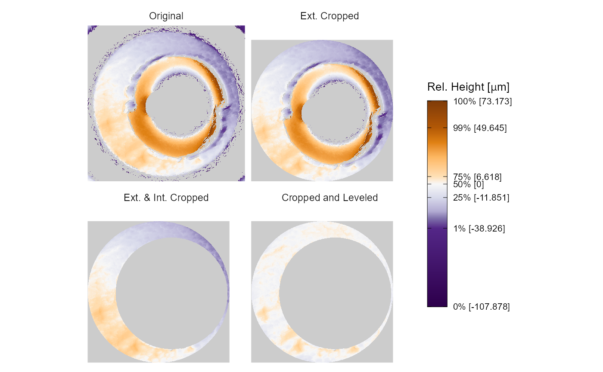

levelBreechFace.RdFinds plane of breechface marks using the RANSAC method
Level a breech face impression surface matrix by a conditional statistics
preProcess_ransacLevel( x3p, ransacInlierThresh = 1e-06, ransacFinalSelectThresh = 2e-05, iters = 300, returnResiduals = TRUE ) preProcess_removeTrend(x3p, statistic = "mean", ...)
| x3p | an x3p object containing the surface matrix of a cartridge case scan |
|---|---|
| ransacInlierThresh | threshold to declare an observed value close to the fitted plane an "inlier". A smaller value will yield a more stable estimate. |
| ransacFinalSelectThresh | once the RANSAC plane is fitted based on the ransacInlierThresh, this argument dictates which observations are selected as the final breech face estimate. |
| iters | number of candidate planes to fit (higher value yields more stable breech face estimate) |
| statistic | either "mean" or "quantile" |
| ... | arguments to be set in the quantreg::rq function if statistic = "quantile" is set. In this case, tau = .5 and method = "fn" are recommended |
an x3p object containing the leveled cartridge case scan surface matrix.
Given input depths (in microns), find best-fitting plane using RANSAC. This should be the plane that the breechface marks are on. Adapted from cartridges3D::findPlaneRansac function. This a modified version of the findPlaneRansac function available in the cartridges3D package on GitHub.
The preProcess_ransacLevel function will throw an error if the final plane estimate is rank-deficient (which is relatively unlikely, but theoretically possible). Re-run the function (possibly setting a different seed) if this occurs.
https://github.com/xhtai/cartridges3D
if (FALSE) { raw_x3p <- x3ptools::read_x3p("path/to/file.x3p") %>% x3ptools::sample_x3p(m = 2) fittedPlane <- raw_x3p$surface.matrix %>% preProcess_ransacLevel(ransacInlierThresh = 10^(-5), ransacFinalSelectThresh = 2*10^(-5), iters = 150) } fadul1.1 <- x3ptools::read_x3p("https://tsapps.nist.gov/NRBTD/Studies/CartridgeMeasurement/DownloadMeasurement/2d9cc51f-6f66-40a0-973a-a9292dbee36d") fadul1.1_extCropped <- preProcess_crop(x3p = fadul1.1,region = "exterior",radiusOffset = -20) fadul1.1_intCroped <- preProcess_crop(x3p = fadul1.1_extCropped, region = "interior",radiusOffset = 200) fadul1.1_leveled <- preProcess_removeTrend(x3p = fadul1.1_intCroped,statistic = "quantile",tau = .5,method = "fn") x3pListPlot(list("Original" = fadul1.1,"Ext. Cropped" = fadul1.1_extCropped,"Ext. & Int. Cropped" = fadul1.1_intCroped,"Cropped and Leveled" = fadul1.1_leveled))